Introduction
What QCalc does
QCalc is a calculator where you type an expression as you would write it on paper and get the answer at once. The calculations are done by libqalculate, the engine of the desktop calculator Qalculate!.
- From arithmetic to fractions, roots, units, currencies, derivatives, integrals, equations and matrices, all in one line.
- When it can, the answer is exact (√2, π/2, 7/12), with a decimal approximation beside it.
- Everyday calculations such as prices, loans, dates, conversions, statistics and tanks are in "Tools": type the numbers and the answer appears.
- 2D and 3D graphs, with areas, lengths and the volumes of solids of revolution.
- QCalc collects no personal data. It uses the internet only to download exchange rates.
The results are for reference. Do not use them where a mistake is not allowed, such as trade or certification, design and construction, or tax returns (notes of caution).
Your first three calculations
What it does Type an expression with the keys and press =: the answer goes into the history. While you type, the answer already shows under the input field.
- Open the app and type
2 + 3 × 4with the keys. "= 14" shows under the input field. - Press =. The expression and "= 14" go into the history, and the input field is empty again.
- Next type
60 mph to km/h("to" is on the → key). "≈ 96.56064 km/h" shows. - The third one is
sqrt(2), also on the √ key: "= √2 ≈ 1.414213562", the exact value and the approximation.
1/3 + 1/4 → = 7/12 ≈ 0.5833333333
Tap an answer in the history to put it into the input field or to copy it.
- The letter x is a variable, not "times". Multiply with the × key (or *).
What is new in 1.12.0
- Clearer: the menu has eight items, and the tools are together in Tools. In every tool, tap an example to fill it in; the answer appears at once.
- Everyday tools: Price: discount and tax, Percentages, Unit price: which is cheaper, Split the bill, Loan, Savings and compound interest, Dates, Times, Convert units and currencies, Statistics, Calculation notes.
- Number format: choose 1,234.5, 1.234,5 or 1 234,5 (Number format).
- History: search, pin with a star, short notes, the sum of the lines you choose; memory keys (History and memory).
- From 2D to 3D: ⟳ 3D turns a region of the graph into a solid of revolution and shows it in 3D at once (3D: QCalc Pro); also solids with known cross sections, the lines of the method and the theorem of Pappus (Make a solid).
- Open quickly: a widget, a quick settings tile and shortcuts on the icon (Widget, tile and shortcuts).
- Sharing: pictures of graphs, and moving GIFs of 3D graphs (Sharing).
- Solids and tanks in 3D: ⟳ 3D at the top left of the picture in Solids and Tanks shows the shape in 3D with the sizes typed; in a tank the level can be dragged to see the amount (Solids and tanks in 3D; 3D is QCalc Pro).
- Digits of the results: the digits of the results of Shapes, Tanks and the like, as decimal places or significant digits, for each kind of quantity, with the rounding; every % has one decimal at first (Digits of the results).
- QCalc Pro: the CSV of tables, tank heads with quick-reference tables, solids from a profile, STL files, more calculation notes and more (QCalc Pro).
- This manual: it is inside the app. The "?" at the top right of a tool or a panel opens its section.
Examples and tips in the app
What it does Examples and tips in the menu has expressions that go into the input field with one tap, and tips. User manual at its top opens this manual.
- Press ☰ at the top left and choose Examples and tips.
- Tap an expression. The panel closes and the expression is in the input field.
- Press = to calculate it.
This manual can be read without the internet. The detailed version with photos (web) and the PDF open from the links at its top.
The screen
| No. | Name | What it is for |
|---|---|---|
| 1 | ☰ (menu) | Opens the tools, the graphs, the lists, the settings and more |
| 2 | Chips | Switch the angle unit (RAD, DEG), exact or approximate (EXACT and others), decimal or hexadecimal, with one tap |
| 3 | 🕘 (history menu) | Search the history, select lines, export, clear |
| 4 | History | The expressions and their answers, the newest at the bottom |
| 5 | Input field | Where you type. The answer while you type (the preview) shows under it |
| 6 | Key pages | Switch between the four pages 123, Functions, Calculus and Matrix |
| 7 | Keys | Digits, operators and functions |
| 8 | = key | Calculates and keeps the expression and the answer in the history |

On a phone with a large text size, the top row of keys (x, ans, the arrows, ⌨) is hidden. ⌨ at the right end of the tabs shows it.
Basic calculations
Typing an expression
What it does Type an expression as a math book writes it, with the keys or, after ⌨, with the phone's keyboard.
- Type the expression with the digit and operator keys. Parentheses are on the ( ) keys.
- A function key of the Functions page (sin, log, √ and others) types "sin(" and the like.
- Write units and currencies by name (
5 km,100 USD). Convert with "to" (5 km to mi). - Press = to calculate.
2^10 → = 1024, 5! → = 120, sin(30°) → = 1/2
÷ × + and the like in an empty input field continue from the last answer, "ans".
- Parentheses that do not pair up give an error. The message says what to fix.
Reading the answer: exact, approximate, fractions
What it does An answer that starts with "=" is exact; one that starts with "≈" is approximate. Answers with fractions or √ also show the decimal.
1/3 + 1/4→= 7/12 ≈ 0.5833333333(the fraction stays, with its decimal)sqrt(8)→= 2√2 ≈ 2.828427125pi × 2→= 2π ≈ 6.283185307
- The chip at the top switches between EXACT, approximate and automatic.
- The number of digits is Precision (significant digits) in Settings (10 by default).
Pro This is a QCalc Pro feature. Up to 1000 digits are free. More than 1000, up to 200000 digits, is a QCalc Pro feature.
A very long answer scrolls in the history so that every digit can be read; copying it copies every digit.
Deleting and undoing
What it does ⌫ deletes one character, AC empties the input field. Right after that, Undo above the input field brings it back.
- ⌫ deletes the character before the cursor; hold it to keep deleting.
- AC empties the input field, and Undo shows above it.
- Undo brings the expression back.
A line deleted from the history can also be brought back for a few seconds with Undo at the bottom of the screen.
Number format: the decimal sign
What it does Choose whether the decimal sign is "." or "," and how digits are grouped. At first QCalc writes numbers as your phone's region does.
- Open Settings.
- In Number format, choose Automatic, 1,234.5, 1.234,5 or 1 234,5.
- What you type and what you see follow the format you chose.
With 1.234,5, type two and a half as 2,5: 2,5 + 3,75 → = 6,25
With a decimal comma, separate the arguments of a function with ";": max(1,5; 2).
- Typing
1.5with a decimal comma gives an error; the message shows the right way to write it.
History and memory
What it does The expressions and answers stay in the history, up to 300 lines. 🕘 at the top right searches, adds up chosen lines, exports and clears.
- Tap an answer in the history to choose Put the expression into the input field, Copy the result and the like.
- ⋯ at the right of a line offers ☆ Pin at the top and Add a short note.
- 🕘 offers Search the history, Select lines: sum, average, copy, Export the history (CSV file) and Clear the whole history.

Lines pinned with a star stay when the history is full.
Pins, notes and search
- Choose ☆ Pin at the top in the ⋯ of a line: it moves up with the other pinned lines.
- Choose Add a short note in ⋯ and write a short note. It shows above the expression.
- In 🕘, Search the history shows only the lines whose expression, answer or note has the words you type.
A line noted "rent" is found by searching for "rent".
Adding up lines
- Choose Select lines: sum, average, copy in 🕘.
- Tap the lines to add up.
- The sum and the average show below, with their unit when the units agree. Copy copies the lines.
- Lines in different units (m and kg) cannot be added; the reason is shown.
Exporting the history (CSV)
Pro This is a QCalc Pro feature.
What it does Saves the history as a CSV file that spreadsheets can open.
- Choose Export the history (CSV file) in 🕘.
- Choose where to save it on Android's save screen.
Memory keys (M+ M− MR MC)
What it does The memory keys of a pocket calculator. The value is kept in its exact form.
- Open More settings in Settings and turn on Show the memory keys (M+ M− MR MC).
- With an answer shown, M+ adds it to the memory and M− subtracts it.
- MR puts the memory into the input field; MC clears it.
Keys and typing help
The four pages of keys
What it does The keys are on four pages, switched with the tabs above them.
| Page | Main keys |
|---|---|
| 123 | Digits, + − × ÷, parentheses, %, ^, √ |
| Functions | sin, cos, tan, log, ln, absolute value, factorial and more |
| Calculus | Derivative d/dx, integral ∫, limit lim, sum Σ, product Π, equations |
| Matrix | Matrix ▦, determinant det, transpose, inverse |
When you do not know the name of a function, look in Lists: functions, units, constants (Lists).
Boxes □ (the forms)
What it does The integral and limit keys open a form with boxes □. Fill in the boxes and the expression is made.
- Press ∫ on the Calculus page.
- Type the function, the lower and the upper limit. Next box ▶ moves to the next box.
- The answer shows below. = keeps it in the history.
The ⋯ of the form has Clear all boxes and How to use this form ›.
Suggestions
What it does While you type, suggestions show under the input field: after "to" the units to convert to; with the keyboard, the names of functions and units.
- Type
5 km to: mi, m, ft and others are suggested. - Tap one to type it.
Writing functions, units and currencies
What it does Expressions are written as in Qalculate!. The common ways:
| Write | Meaning |
|---|---|
sqrt(x), √x | Square root |
x^2 | Power |
5 km to mi | Convert a unit |
100 USD to EUR | Convert a currency (with the exchange rates) |
solve(x^2 − 5x + 6 = 0) | Solve an equation |
diff(x^3) | Derivative |
integrate(x^2, 0, 1) | Definite integral |
ans | The last answer |
Ten traditional Japanese units (tsubo, shaku, shō, kan and others) work too: 30 tsubo to m^2.
Lists: functions, units, constants, your definitions
What it does Lists: functions, units, constants in the menu has four tabs: functions, units and currencies, variables and constants, and your own definitions, each with a search.
- Open Lists: functions, units, constants from ☰.
- Choose a tab and type part of a name in the box at the top.
- Tap an item to read about it; Insert puts it into the input field.
In the tab of your own definitions you can save variables (r = 5 cm) and functions; they are kept for the next time.
Currencies and exchange rates
What it does Currencies convert like 100 USD to EUR. The exchange rates are updated by themselves when the app starts (an internet connection is needed). While roaming abroad or in Data Saver they are not updated by themselves; press Update now when you need new rates.
- To update them now, press Update exchange rates now in Settings.
- The time of the last update is on the same row.
- Without the internet the rates cannot be updated; the last ones are used.
The prices of Bitcoin (BTC) and of gold (XAU), silver (XAG), platinum (XPT) and palladium (XPD) are updated with the exchange rates, too.
The rates are kept on the device, so where there is no internet you can still convert with the last rates. Opening the app once before a trip is a good idea.
The physical constants are the CODATA 2022 values built into the calculation engine; they are not taken from the internet. New recommended values come with updates of the app.
Tools
Finding a tool
What it does Tools in the menu has the everyday tools and those for shapes, volumes and data. Search by what you want to do.
- "?": opens this manual at the tool
- Examples: a tap fills them in
- Boxes: type the numbers (a grey number is an example)
- Results: a tap puts the expression into the input field, keeps the result in the history or copies it
- A line of caution (tools for money or safety)
- One line of explanation
- Open Tools from ☰.
- Type what you want to do in the box at the top, such as "loan", "tank" or "mean".
- Tap the tool.
- Tap an example or type the numbers. The answer appears at once.

The tools used recently come first. Open QCalc quickly at the bottom adds the widget or the tile.
Price: discount and tax
What it does The price with or without tax, one or two discounts, and how to round.
- Open Price: discount and tax in Tools.
- Type the price, the discount (%) and the tax rate.
- Choose whether the price includes tax, and how to round.
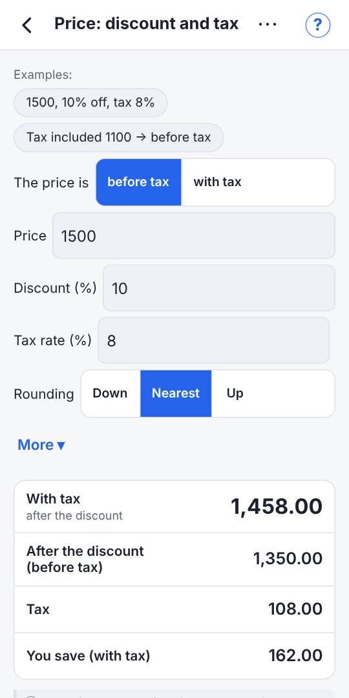
1500 with 10% off and tax 8% → 1,458 with tax (1,350 before tax, tax 108)
- To find the price before tax from a price with tax, choose "with tax" first.
Percentages
What it does A is what percent of B, and the change from A to B in percent.
- Open Percentages and choose what to work out.
- Type A and B.
30 of 120 → 25 %. From 80 to 100 → up 25 %
Unit price: which is cheaper
What it does Compares the price per 100 g (100 mL, one piece) of two products.
- Open Unit price: which is cheaper.
- Type the price and the amount (500 g, 1 kg) of A and B.
298 for 500 g and 498 for 1 kg → B is cheaper (59.6 and 49.8 per 100 g, 16.4 % less)
Split the bill
What it does Each person's share, rounded as you choose.
- Open Split the bill and type the total and the number of people.
- Choose rounding up or down.
10000 for 3 → each 3,333.34 (rounded up; 0.02 too much)
Loan
What it does The monthly payment, the interest in all and the repayment table, with equal payments or equal principal.
- Open Loan.
- Type the amount, the yearly rate and the years.
- Choose how it is repaid.
- Open Payments, month by month for the table.
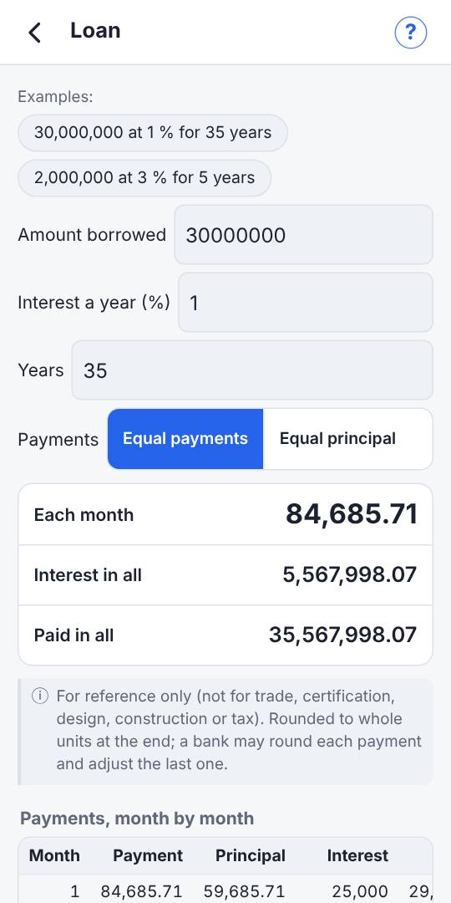
30,000,000 at 1 % for 35 years (equal payments) → 84,685.71 a month, interest in all 5,567,998.07
Pro This is a QCalc Pro feature. Saving the table as a CSV file is a QCalc Pro feature (showing and copying it are free).
- Typing 0.01 for 1 % gives 0.01 %. Type the number of percent.
Savings and compound interest
What it does What a monthly saving or a sum grows to with compound interest.
- Open Savings and compound interest and type the monthly amount (or the starting sum), the yearly rate and the years.
30,000 a month, 3 %, 20 years → 9,849,059.94 (put in 7,200,000; interest 2,649,059.94)
Dates
What it does The days between two dates, n days after or before, an age, the weekday.
- Open Dates and choose what to work out.
- Type the dates and the days.
100 days from today → the date and its weekday
Times
What it does Adds and subtracts h:mm, and gives the hours worked without breaks and the pay.
- Open Times and type the start, the end and the break.
- Type the hourly wage to get the pay.
9:00 to 17:30 with a 1:00 break → 7:30 worked (7.5 hours)
Convert units and currencies
What it does Type a number in either of two rows; the other one converts. Length, weight, volume, temperature, fuel economy, currencies and more.
- Open Convert units and currencies and choose the kind of quantity with the chips at the top.
- Choose the units of the two rows.
- Type a number in either row.
- ⇅ swaps the rows.
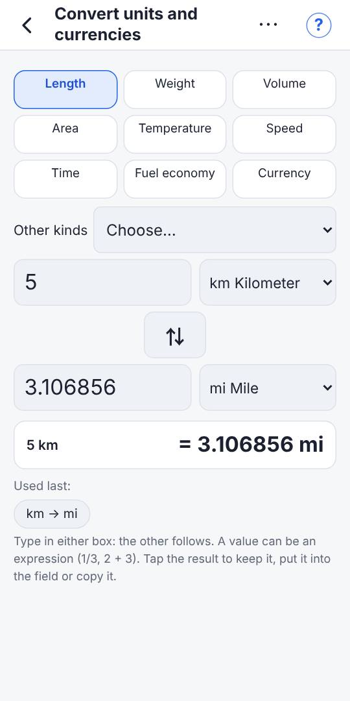
5 km → 3.106855961 mi
Tap the result row to put "5 km to mi" into the input field or keep it in the history.
Shapes: area, volume, length
What it does Choose a shape from its picture and type its sizes: the area, the perimeter, the volume and the surface area appear.
- Open Flat shapes or Solids in Tools.
- Tap the picture of a shape.
- Type the sizes named in the picture (r, h). Round sizes can be a radius or a diameter.
- The results change while you type; tap one to use or copy its expression.
A sphere of radius 2 → volume 32π/3 ≈ 33.51032164, surface 16π
Choose a material to get the weight.
⟳ 3D at the top left of the picture shows the solid in 3D, to turn it (Solids and tanks in 3D).
Tanks: liquid and level
What it does The amount of liquid in a lying or standing tank or a round container from the height of the liquid, and the height for an amount.
- Open Tanks: liquid and level in Tools.
- Choose the shape and type the diameter (or radius) and the length.
- Type the height of the liquid and choose the unit of the lengths.
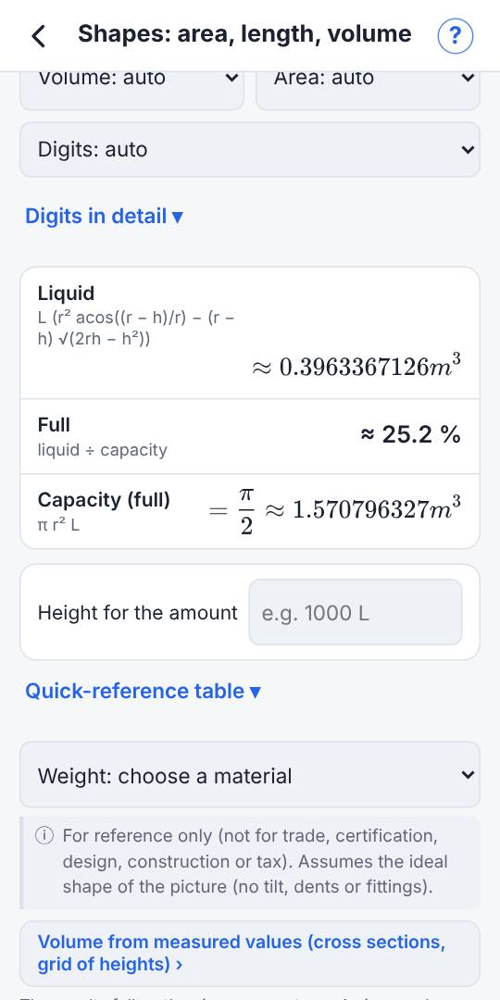
Lying, diameter 1 m, length 2 m, liquid 30 cm → 0.3963367126 m³ (about 396 L)
Quick-reference table ▾ lists the amount for each height.
- A radius typed in the diameter box gives about a quarter of the amount. Check radius or diameter.
Tank heads and quick-reference tables
Pro This is a QCalc Pro feature.
What it does Adds the heads at both ends of a tank (hemispherical, semi-elliptical 2:1, dished) to the amount of liquid and the whole volume, with a table of the amount for each height.
- In Tanks: liquid and level, choose a lying or standing cylinder.
- Choose Hemispherical or Semi-elliptical 2:1 in Heads; dished heads are in Other heads ▾.
- L is the length of the shell (without the heads).
- In Quick-reference table ▾, type the step: a table of heights and amounts, to copy or save as CSV.
Flat heads (a plain cylinder, as before) are free.
Solids and tanks in 3D
Pro This is a QCalc Pro feature.
What it does The shape of Solids or Tanks, with the sizes typed, in 3D to turn. Above it, the volume and the surface area of the tool (for a tank, the amount of liquid and the capacity), large.
- In Solids or Tanks of the tools, choose a shape and type its sizes.
- Press ⟳ 3D at the top left of the picture (read out as View in 3D). The shape grows into 3D.
- Turn it with one finger, zoom with two. A solid of revolution shows its cut with Cut in half.
- ← Back to the shape goes back to the tool with the same shape and sizes.
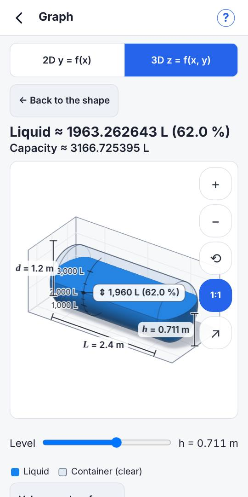
A cylinder of diameter 30 cm and height 50 cm → volume 11250π ≈ 35342.91735 cm³
A tank is drawn clear, its liquid as a solid of its own color. Drag up or down from the level (the box with the amount) to move it: Height of the liquid in the tool changes too. A drag elsewhere turns the graph. The slider Level below moves it as well.
The marks on the wall are round amounts: in a lying or a spherical tank their gaps are visibly uneven.
The numbers at the level are rounded for reading (3 significant digits, % with one decimal); the exact values are above the graph and in the tool (Digits of the results).
Without QCalc Pro, the row Turn it in 3D (QCalc Pro) appears just above the results.
Digits of the results
What it does How many digits the results of Shapes, Tanks, Solid from a profile and Make a solid show after "≈". Exact values (11250π) stay. This is separate from the calculator's Precision (significant digits).
- Above the results, choose in Digits: auto, for example Digits: 2 decimal places.
- For more, open Digits in detail ▾.
- Choose Decimal places or Significant digits and type the number of digits (0 to 15).
- Each kind of quantity on its own sets volume, area, length, weight and % separately.
The volume of a cylinder 11250π ≈ 35342.91735 cm³ → with 2 decimal places 11250π ≈ 35342.92 cm³; with 4 significant digits 11250π ≈ 35340 cm³
The numbers In the 3D picture (at the level, on the scale, the sizes) have their own setting: auto is 3 significant digits, % with one decimal.
The rounding is Round half up, Round down or Round up; trailing zeros Keep (2.50) or Drop (2.5).
A quick-reference table saved as CSV has all the digits at first; with As shown it has the digits of the screen.
The same items are in Settings, under Digits of the tools; Back to the first settings brings back auto.
No more than 15 digits: the numbers are worked out with double precision. With the first settings every % has one decimal.
Volume from measured values
What it does The volume of earthwork or a pond from a table of cross sections (average end area, Simpson's rule) or from a grid of point heights.
- Open Volume from measured values in Tools.
- Choose cross sections or point heights, and type the distances and the areas (or the heights).
- Choose the unit of the lengths: the volume is given in m³ and L.
Sections x² (0 to 4, every 1 m) → average end area 22 m³, Simpson's rule 64/3 m³ ≈ 21.33 m³
Two columns copied from a spreadsheet can be pasted into the table.
Solid from a profile
Pro This is a QCalc Pro feature.
What it does The volume, capacity, weight and surface of a turned part or a vessel from a table of positions and diameters along its axis.
- Open Solid from a profile in Tools.
- Type the positions and the diameters (or radii). Two rows at the same position make a step.
- Choose the unit (mm, cm, m, in).
- More ▾ adds the inner profile of a vessel and the shrinkage of pottery.
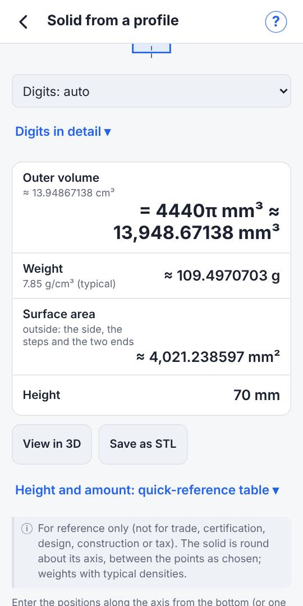
The example stepped shaft → outer volume 4440π mm³ ≈ 13.95 cm³, about 109.5 g in iron
View in 3D shows the shape; an STL file can be printed with a 3D printer (STL files).
STL files for 3D printers
Pro This is a QCalc Pro feature.
What it does Saves a solid of revolution, a solid with cross sections or a solid from a profile as an STL file for 3D printers.
- Press Save as STL under the results of the solid.
- Choose "1 unit = □ mm" and how fine the triangles are.
- Press Save the STL file and choose where to save it.
Before printing, check the size and the walls in your slicer.
Statistics
What it does For one column: the mean, the median, the standard deviation, the quartiles and more; for two columns: the regression line and the correlation.
- Open Statistics in Tools.
- Type the values, or paste them from a spreadsheet.
- With two columns, 📈 Show in a graph draws the points and the line.
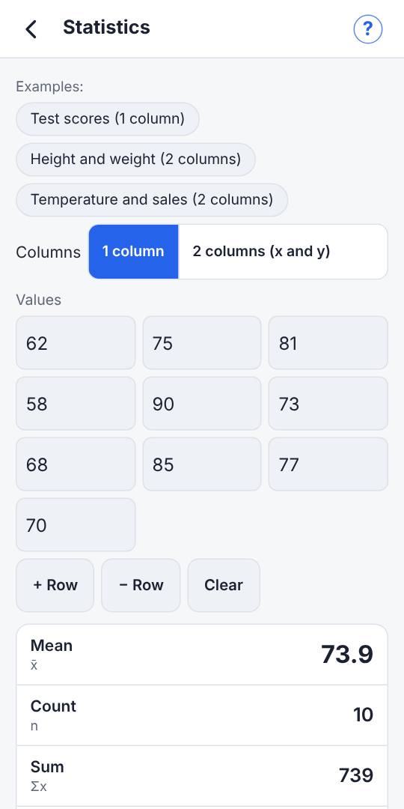
Test scores of 10 people → mean 73.9, median 74, standard deviation (sample) 9.938142013
The quartiles come first by the method of Japanese high school textbooks; the method of spreadsheets is under "More".
- A value that is not a number is shown with its row and how to fix it.
Calculation notes
What it does A memo with one calculation on each line and its answer on the right. Give a value a name and use it in the lines below.
- Open Calculation notes in Tools.
- Write one calculation on each line, such as
rent = 85000 JPY. - Use the name in a later line:
rent × 12. - A line "total" adds up the answers above it.
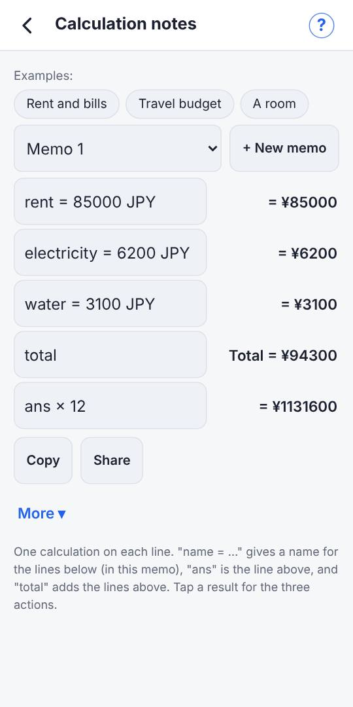
rent 85000, electricity 6200, water 3100 (JPY) → the line "total" shows "total = ¥94300"
Pro This is a QCalc Pro feature. The first memo is free. More memos, and saving as text or CSV, are QCalc Pro features.
A line that begins with # or // is a note (it is not calculated).
Graphs
2D graph
What it does Draws graphs of y = f(x). Drag to move them, pinch to zoom.
- Open Graph from ☰ (or 📈 above the input field).
- Type the functions, one per line, and the range of x.
- Press Draw.
- Tap the graph to see the coordinates of a point.
Calculus ▾ gives the derivative, tangents, zeros and extrema.
Tap a sample below the graph to draw an example.
Area and length
What it does The area between a curve and the x axis or between two curves, and the length of a curve. Drag the ends of the range with a finger.
- Draw the functions in the 2D graph.
- Open Area and length ▾.
- Type the range a and b, or drag the lines at its ends.
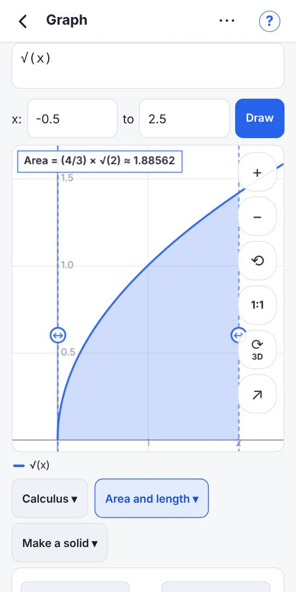
√x from 0 to 2 → area 1.885618083
Switch to Length for the length of the curve.
Make a solid (solids of revolution)
What it does The volume and surface of the solid made by turning a region of the 2D graph around an axis.
- Draw the functions in the 2D graph (for example
xandx^2). - Press the round button ⟳ 3D on the graph. The solid around the x axis appears in 3D at once, with its volume large above it (QCalc Pro). Without Pro, the 2D graph shows the solid's cut (mirrored across the axis) and its volume.
- For another axis, go back with ← Back to 2D and tap its line; drag the line y = k with a finger. View in 3D shows it in 3D again.
- ↶ Undo goes back to the axis before.

Between y = x and y = x², around the x axis → volume 2π/15 ≈ 0.4188790205
Show the method with lines draws the disks (washers) or shells. The line Pappus–Guldinus theorem: compares the volume from the centroid with the integral.
Pro This is a QCalc Pro feature. Turning the solid with a finger in 3D is a QCalc Pro feature, like the 3D graph. Without Pro, the row Turn it in 3D (QCalc Pro) appears instead.
Solids with known cross sections
What it does The volume of a solid whose base is the region between two curves, with squares, equilateral triangles or semicircles standing on it.
- Open Make a solid ▾.
- Choose Cross sections (shapes standing on the region).
- Choose the shape (□ △ ◠); others are in More shapes ▾.
Squares on the region between y = x and y = x² → volume 1/30
3D graph
Pro This is a QCalc Pro feature.
What it does Draws surfaces z = f(x, y) and solids in 3D that you can turn with a finger.
- Choose 3D z = f(x, y) in Graph.
- Type up to four functions and the ranges of x and y, then press Draw.
- Turn with one finger, zoom with two.
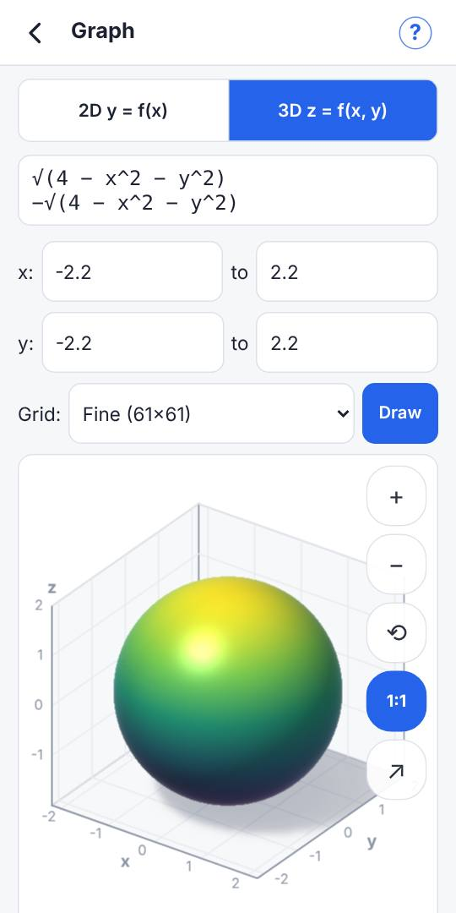
Partial derivatives ▾ draws ∂f/∂x and ∂f/∂y.
Volume and surface (3D)
What it does The volume under a surface of the 3D graph (or between two surfaces) and the surface area.
- Draw the surfaces in the 3D graph.
- Open Volume and surface ▾: the volume and the surface area appear at once.
- Choose the region: a rectangle, a disk, the enclosed part, or one given by formulas.
The sample sphere (radius 2) → volume 32π/3, surface 16π
Under Example at the bottom, every solid can be chosen: Draw draws it in 3D with the values of Shapes, and Change the numbers opens Shapes.
For a solid made in the 2D graph (⟳ 3D) or in Solid from a profile, Volume and surface ▾ in its 3D view shows the values found there (Values of the solid of revolution). The tools for the region come back when other formulas are drawn.
Where the surfaces have no real values in part of the region, Measure the enclosed part measures only where they are real.
Forms: calculus, equations, matrices
Derivatives, integrals, limits, sums
What it does The keys of the Calculus page open a form with boxes □.
- Press d/dx, ∫, lim, Σ or another key on the Calculus page.
- Fill in the boxes. The variable can stay x.
- The answer shows below; = keeps it in the history.
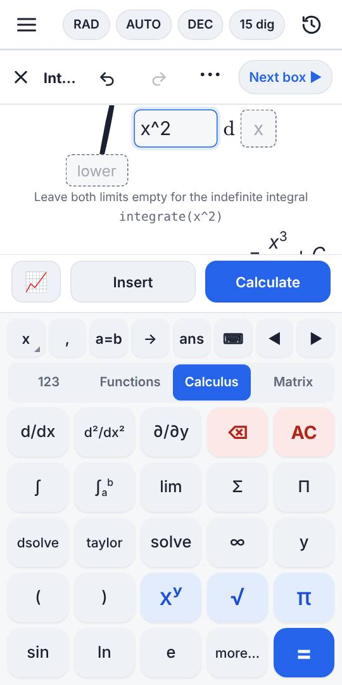
∫ x² sin(x) dx from 0 to π → π² − 4 ≈ 5.869604401
A limit can be Both sides, From the right (+) or From the left (−).
Equations
What it does Solves equations and systems of equations.
- Press the equation key on the Calculus page, or type
solve(x^2 − 5x + 6 = 0). - The answer is shown as "x = 2 or x = 3".
solve(x^2 − 5x + 6 = 0) → x = 2, x = 3
Matrices and vectors
What it does ▦ on the Matrix page types a matrix as a table (up to 30 × 30).
- Press ▦ on the Matrix page.
- Choose the rows and columns and fill in the boxes.
- Calculate with det, transpose, inverse and the other keys.
Tables from a spreadsheet can be pasted; Copy as a table (for a spreadsheet) in ⋯ copies them back.
Settings, language, widget
Settings
What it does The settings used most are at the top; those most people never change are in More settings. A change applies at once.
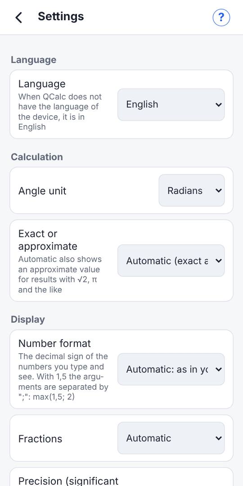
| Setting | What it changes |
|---|---|
| Angle unit | Radians, degrees, gradians |
| Exact or approximate | Automatic, always exact, always approximate |
| Number format | The decimal sign and the digit groups (Number format) |
| Fractions | Automatic, decimal, fraction, mixed fraction |
| Precision (significant digits) | The precision of calculations (10 by default) |
| Digits of the tools | The digits of the results of Shapes, Tanks and the like (Digits of the results) |
| Light or dark | The colors of the screen |
| Text size | The text of the history, the input field and the result |
| Color theme | The color of the keys (other than blue: QCalc Pro) |
| Show the result while typing | The preview |
| Update exchange rates now | Downloads the rates at once |
Reset all settings sets everything back to the defaults (the language stays).
Language
What it does The app is in English, 日本語, Español, Deutsch, Français, 한국어 or 繁體中文.
- Choose Language in ☰.
- Choose a language: the app opens again in it, with the history and the expression being typed.
- Same as device follows the phone's language again.
On Android 13 and later, the language can also be set for each app in the phone's settings.
Widget, tile and shortcuts
What it does Open QCalc quickly from a widget on the home screen, a tile of the quick settings or the shortcuts of the icon. All free.
- Open Open QCalc quickly at the bottom of Tools.
- Choose the widget or the tile and follow the screen.
- Touch and hold the icon for the shortcuts New calculation, Tools and Convert.
The widget shows the last answer and buttons for Calculate, Tools and Convert.
About this app and privacy
What it does About this app shows the version, the privacy notes, the licenses and links to the source code.
- Tell someone about QCalc shares the address of QCalc on Google Play.
- Send a bug report or an idea opens a draft in your mail app with only the version, the phone and the language; you decide whether to send it.
- QCalc collects no personal data and sends nothing anywhere.
- It uses the internet only to download exchange rates.
- The calculation engine is under the GNU GPL v2 or later (Open source licenses).
QCalc Pro
What is free
What it does Calculations, 2D graphs, areas and lengths, solids of revolution, shapes, tanks (flat heads), the everyday tools, conversion, statistics, the first calculation memo, the widget and this manual are all free, with no ads.
What QCalc Pro adds
What it does One purchase unlocks every Pro feature, also those of later updates. No subscription, no ads.
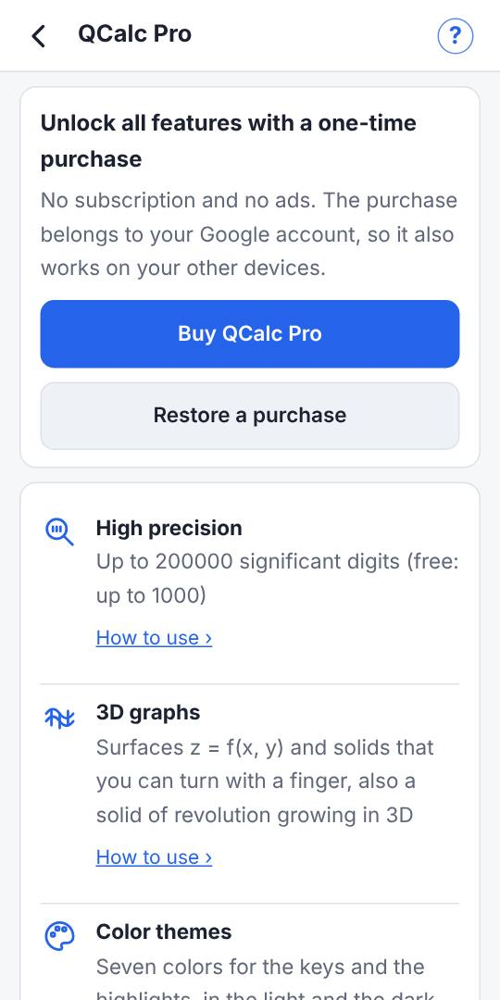
| Feature | Section of this manual |
|---|---|
| More than 1000 significant digits (up to 200000) | Reading the answer |
| 3D graphs, View in 3D | 3D graph |
| Color themes (7 colors) | Settings |
| Exporting the history (CSV) | Exporting the history |
| Tables as CSV files (loan, savings) | Loan |
| Tank heads and quick-reference tables | Tank heads |
| Solid from a profile | Solid from a profile |
| Solids and tanks in 3D | Solids and tanks in 3D |
| STL files | STL files |
| GIF and pictures without the mark | Sharing |
| More calculation notes, saved as files | Calculation notes |
How to use › on a row of the Pro features opens its section of this manual.
Buying and restoring
The price is shown on the Google Play purchase screen.
- Open QCalc Pro from ☰ (or from the sheet shown by a locked feature).
- Press Buy QCalc Pro and buy it on Google Play's screen.
- On a phone where you bought it before, or after reinstalling, press Restore a purchase.
The purchase belongs to your Google account, so it also works on your other devices.
Troubleshooting
Frequently asked questions
- The answer is not a decimal: check the chip at the top or Exact or approximate.
- x gives strange answers: x is a variable; multiply with the × key.
- The currency rates are old: press Update exchange rates now (with the internet).
- The top row of keys is missing: it is hidden with a large text size; ⌨ at the right end of the tabs shows it.
- The 3D graph does not open: the 3D graph is a QCalc Pro feature (QCalc Pro).
Error messages and how to fix them
What it does An error message says what is wrong and how to fix it. The common ones:
| Message | How to fix it |
|---|---|
| Parentheses do not pair up | Make ( and ) the same number |
| 1.5 cannot be read (with a decimal comma) | Type 1,5; separate arguments with ";" |
| The units do not match | Add quantities in the same kind of unit (m and kg cannot be added) |
| Draw a function first | Press Draw in the graph before opening the area or the solid |
| The time limit was reached | Make the time limit longer, or the expression simpler |
The time limit of a calculation
What it does A very long calculation stops after Time limit (seconds) (20 seconds by default, 1 to 3600).
- "Calculating…" shows while it runs; tap it to stop.
- To allow longer, change Time limit (seconds) in More settings in Settings.
Notes of caution: using the results
The results of QCalc are for reference. Do not use them for trade or certification (including legal metrology), design and construction, tax returns, medicine or decisions about safety.
- The amount in a tank assumes the ideal shape of the tank; a real tank may differ.
- Weights use typical densities.
- The tax rates are the common rates of November 2026 and can be changed in the box.
- Exchange rates are those downloaded, not the rates of a real trade.
- The tools for money or safety show a line of caution under the results.
Glossary
| Word | Meaning |
|---|---|
| Exact value | A value kept as fractions, √ and π. It starts with "=" |
| Approximation | A value as a decimal. It starts with "≈" |
| Significant digits | The number of digits of an answer (the precision) |
| ans | The last answer |
| Preview | The answer shown under the input field while you type |
| Solid of revolution | A solid made by turning a region around an axis |
| Head | The cap at each end of a tank |
| Quick-reference table | A table of the amount for each height of the liquid |
| STL | A file format of solids for 3D printers |
| CSV | A table in a text file that spreadsheets can open |
| QCalc Pro | The features for work, unlocked by one purchase |
Index
- ☆ Pin at the top — History and memory, Pins, notes and search
- ↶ Undo — Make a solid (solids of revolution)
- 2D graph — 2D graph
- 3D z = f(x, y) — 3D graph
- 3D graph — 3D graph
- About this app — About this app and privacy
- About this app and privacy — About this app and privacy
- Add a short note — History and memory, Pins, notes and search
- Adding up lines — Adding up lines
- Angle unit — Settings
- Area and length — Area and length
- Area and length ▾ — Area and length
- As shown — Digits of the results
- Automatic — Number format: the decimal sign
- Back to the first settings — Digits of the results
- Both sides — Derivatives, integrals, limits, sums
- Boxes □ (the forms) — Boxes □ (the forms)
- Buy QCalc Pro — Buying and restoring
- Buying and restoring — Buying and restoring
- Calculation notes — What is new in 1.12.0, Calculation notes
- Calculus — The four pages of keys, Boxes □ (the forms), Derivatives, integrals, limits, sums, Equations
- Calculus ▾ — 2D graph
- Change the numbers — Volume and surface (3D)
- Clear all boxes — Boxes □ (the forms)
- Clear the whole history — History and memory
- Color theme — Settings
- Convert — Widget, tile and shortcuts
- Convert units and currencies — What is new in 1.12.0, Convert units and currencies
- Copy — Adding up lines
- Copy as a table (for a spreadsheet) — Matrices and vectors
- Copy the result — History and memory
- Cross sections (shapes standing on the region) — Solids with known cross sections
- Currencies and exchange rates — Currencies and exchange rates
- Cut in half — Solids and tanks in 3D
- Dates — What is new in 1.12.0, Dates
- Decimal places — Digits of the results
- Deleting and undoing — Deleting and undoing
- Derivatives, integrals, limits, sums — Derivatives, integrals, limits, sums
- Digits in detail ▾ — Digits of the results
- Digits of the results — Digits of the results
- Digits of the tools — Digits of the results, Settings
- Digits: 2 decimal places — Digits of the results
- Digits: auto — Digits of the results
- Draw — 2D graph, 3D graph, Volume and surface (3D), Error messages and how to fix them
- Drop (2.5) — Digits of the results
- Each kind of quantity on its own — Digits of the results
- Equations — Equations
- Error messages and how to fix them — Error messages and how to fix them
- Exact or approximate — Settings, Frequently asked questions
- Example — Volume and surface (3D)
- Examples and tips — Examples and tips in the app
- Examples and tips in the app — Examples and tips in the app
- Export the history (CSV file) — History and memory, Exporting the history (CSV)
- Exporting the history (CSV) — Exporting the history (CSV)
- Finding a tool — Finding a tool
- Flat shapes — Shapes: area, volume, length
- Fractions — Settings
- Frequently asked questions — Frequently asked questions
- From the left (−) — Derivatives, integrals, limits, sums
- From the right (+) — Derivatives, integrals, limits, sums
- Functions — The four pages of keys
- Graph — 2D graph, 3D graph
- Heads — Tank heads and quick-reference tables
- Height of the liquid — Solids and tanks in 3D
- Hemispherical — Tank heads and quick-reference tables
- How to use this form › — Boxes □ (the forms)
- How to use › — What QCalc Pro adds
- In the 3D picture — Digits of the results
- Insert — Lists: functions, units, constants, your definitions
- Keep (2.50) — Digits of the results
- Language — Language
- Length — Area and length
- Level — Solids and tanks in 3D
- Light or dark — Settings
- Lists: functions, units, constants — The four pages of keys, Lists: functions, units, constants, your definitions
- Lists: functions, units, constants, your definitions — Lists: functions, units, constants, your definitions
- Loan — What is new in 1.12.0, Loan
- Make a solid (solids of revolution) — Make a solid (solids of revolution)
- Make a solid ▾ — Solids with known cross sections
- Matrices and vectors — Matrices and vectors
- Matrix — The four pages of keys, Matrices and vectors
- Measure the enclosed part — Volume and surface (3D)
- Memory keys (M+ M− MR MC) — Memory keys (M+ M− MR MC)
- More settings — Memory keys (M+ M− MR MC), Settings, The time limit of a calculation
- More shapes ▾ — Solids with known cross sections
- More ▾ — Solid from a profile
- New calculation — Widget, tile and shortcuts
- Next box ▶ — Boxes □ (the forms)
- Notes of caution: using the results — Notes of caution: using the results
- Number format — Number format: the decimal sign, Settings
- Number format: the decimal sign — Number format: the decimal sign
- Open QCalc quickly — Finding a tool, Widget, tile and shortcuts
- Open source licenses — About this app and privacy
- Other heads ▾ — Tank heads and quick-reference tables
- Pappus–Guldinus theorem: — Make a solid (solids of revolution)
- Partial derivatives ▾ — 3D graph
- Payments, month by month — Loan
- Percentages — What is new in 1.12.0, Percentages
- Pins, notes and search — Pins, notes and search
- Precision (significant digits) — Reading the answer: exact, approximate, fractions, Digits of the results, Settings
- Price: discount and tax — What is new in 1.12.0, Price: discount and tax
- Put the expression into the input field — History and memory
- Quick-reference table ▾ — Tanks: liquid and level, Tank heads and quick-reference tables
- Reading the answer: exact, approximate, fractions — Reading the answer: exact, approximate, fractions
- Reset all settings — Settings
- Restore a purchase — Buying and restoring
- Round down — Digits of the results
- Round half up — Digits of the results
- Round up — Digits of the results
- Same as device — Language
- Save as STL — STL files for 3D printers
- Save the STL file — STL files for 3D printers
- Savings and compound interest — What is new in 1.12.0, Savings and compound interest
- Search the history — History and memory, Pins, notes and search
- Select lines: sum, average, copy — History and memory, Adding up lines
- Semi-elliptical 2:1 — Tank heads and quick-reference tables
- Send a bug report or an idea — About this app and privacy
- Settings — Reading the answer: exact, approximate, fractions, Number format: the decimal sign, Memory keys (M+ M− MR MC), Currencies and exchange rates
- Shapes: area, volume, length — Shapes: area, volume, length
- Share a picture of the graph — Sharing pictures and GIFs
- Sharing pictures and GIFs — Sharing pictures and GIFs
- Show the memory keys (M+ M− MR MC) — Memory keys (M+ M− MR MC)
- Show the method with lines — Make a solid (solids of revolution)
- Show the result while typing — Settings
- Significant digits — Digits of the results
- Solid from a profile — Solid from a profile, Volume and surface (3D)
- Solids — What is new in 1.12.0, Shapes: area, volume, length, Solids and tanks in 3D
- Solids and tanks in 3D — Solids and tanks in 3D
- Solids with known cross sections — Solids with known cross sections
- Split the bill — What is new in 1.12.0, Split the bill
- Statistics — What is new in 1.12.0, Statistics
- STL files for 3D printers — STL files for 3D printers
- Suggestions — Suggestions
- Tank heads and quick-reference tables — Tank heads and quick-reference tables
- Tanks — What is new in 1.12.0, Solids and tanks in 3D
- Tanks: liquid and level — Tanks: liquid and level, Tank heads and quick-reference tables
- Tell someone about QCalc — About this app and privacy
- Text size — Settings
- The four pages of keys — The four pages of keys
- The time limit of a calculation — The time limit of a calculation
- Time limit (seconds) — The time limit of a calculation
- Times — What is new in 1.12.0, Times
- Tools — What is new in 1.12.0, Finding a tool, Price: discount and tax, Shapes: area, volume, length
- Turn it in 3D (QCalc Pro) — Solids and tanks in 3D, Make a solid (solids of revolution)
- Typing an expression — Typing an expression
- Undo — Deleting and undoing
- Unit price: which is cheaper — What is new in 1.12.0, Unit price: which is cheaper
- Update exchange rates now — Currencies and exchange rates, Settings, Frequently asked questions
- Update now — Currencies and exchange rates
- User manual — Examples and tips in the app
- Values of the solid of revolution — Volume and surface (3D)
- View in 3D — Solids and tanks in 3D, Solid from a profile, Make a solid (solids of revolution)
- Volume and surface (3D) — Volume and surface (3D)
- Volume and surface ▾ — Volume and surface (3D)
- Volume from measured values — Volume from measured values
- What is free — What is free
- What is new in 1.12.0 — What is new in 1.12.0
- What QCalc does — What QCalc does
- What QCalc Pro adds — What QCalc Pro adds
- Widget, tile and shortcuts — Widget, tile and shortcuts
- Writing functions, units and currencies — Writing functions, units and currencies
- Your first three calculations — Your first three calculations
- ← Back to 2D — Make a solid (solids of revolution)
- ← Back to the shape — Solids and tanks in 3D
- 📈 Show in a graph — Statistics